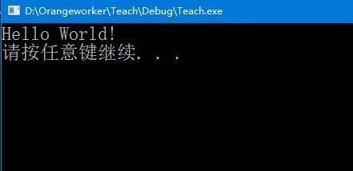

什么是程序?
程序（program）是为实现特定目标或解决特定问题而用计算机语言编写的命令序列的集合。
C语言:
基本的输入输出函数
输入函数：
scanf 在VS2017中修改为scanf_s，也可以将检测关闭。
输出函数：
printf
//Hello World.c
#include
<stdio.h>
int
main
(
void
)
{
printf
(
"Hello World.\n"
)
;
return
0;
}
运行结果：

#include<stdio.h>是在程序编译之前要处理的内容，称为编译预处理命令。编译预处理命令还有很多，它们都以“#”开头，并且不用分号结尾。
在使用标准函数库中的输入输出函数时，编程系统要求程序提供有关的信息（例如对这些输入输出函数的声明），
#include<stdio.h>的作用就是用来提供这些信息的，stdio.h是C编译系统提供的一个文件名，stdio是“standard input & output”的缩写，即有关标准输入输出的信息。
在程序中用到系统提供的标准函数库中的输入输出函数时，应在程序的开头写上一行：#include"stdio.h"或者是#include<stdio.h>,这样才能调用库函数。
二者主要在于查找效率上有差别，#include<stdio.h>一般用包含系统文件，它是查找先从系统目录查找开始查找；#include "stdio.h"一般用包含项目文件，它是查找先从项目目录查找开始查找。
在编写C语言中，常用到printf()和scanf()函数，他们就是stdio.h中的两个标准输入输出函数，所以编程语句中如果要用到此两个函数就一定要在头文件中加入#include<stdio.h>。
前面说过了printf可以使括号中的引号里的字符进行打印，所以:
printf("Hello World!\n");
就打印出了Hello World!\n
//Sum.c
#include
<stdio.h>
int
main
(
void
)
{
int
a,b;
scanf
(
"%d %d",&a,&b
)
;
printf
(
"%d",a+b
)
;
return
0;
}
这个程序主要功能是让两个整数进行相加。
scanf函数的模样大致就如上，输入时要按照对应的格式，不然会得到意料之外的结果。
%d代表的是整型的数据，根据不同的数据要选择相对应的符号。相对应的%d按顺序对应后面的变量。
&是取地址符，scanf中，变量是要带上&符号的，除非里面的原本就是地址。
Tips：\n是转义字符，表示换行的意思。